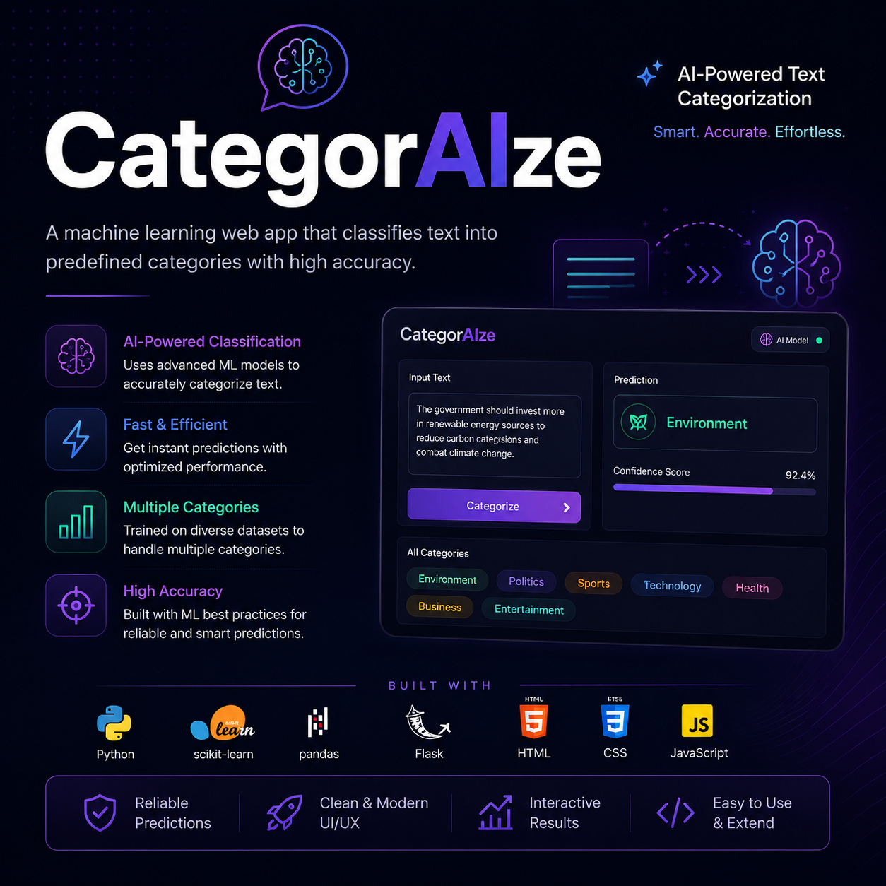
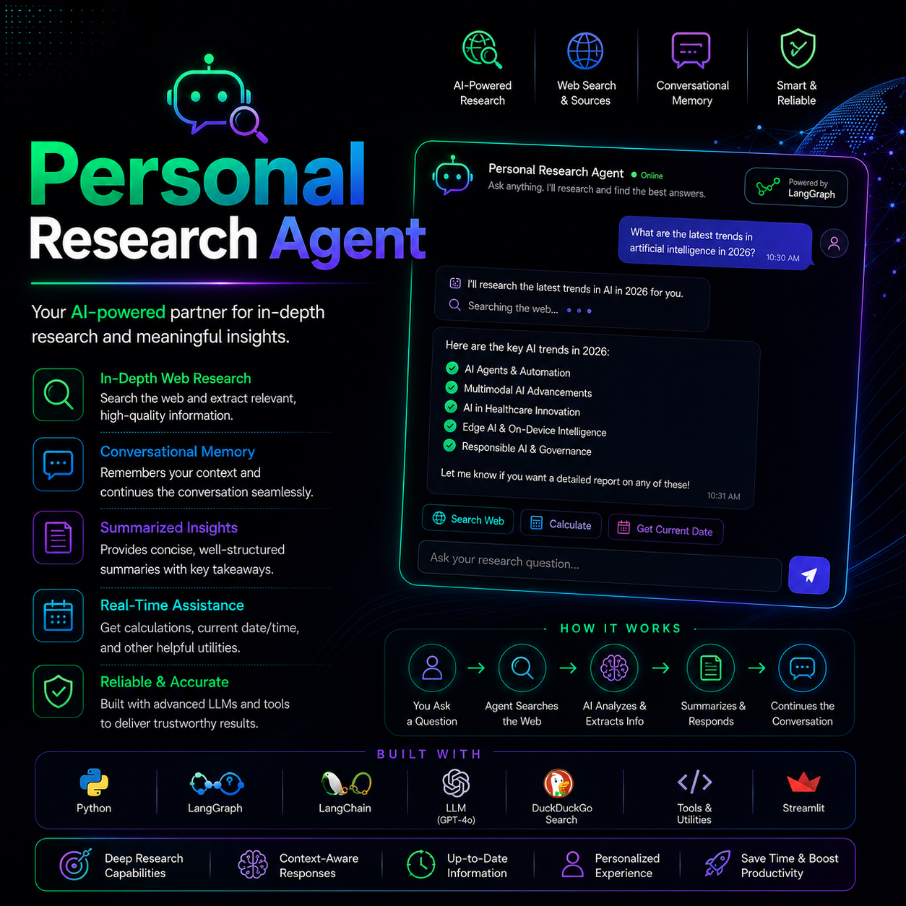

Hey — I'm Shrey Gupta, a 4th-year ECE + CS undergrad at JIIT Noida with a problem: I can't stop building things.
On the web dev side, I build full-stack platforms — think React + Node.js backends, PostgreSQL schemas, Redis caching layers, JWT auth flows and REST APIs with actual error handling. I care about fast, secure, production-ready code, not just "it works on my machine."
On the AI/ML side, I work with LLMs, LangChain, LangGraph, HuggingFace Transformers, RAG pipelines and vector databases. I've fine-tuned DistilBERT for 97% accuracy, built agentic systems that reason autonomously, and shipped AI that saves real hours of manual work.
The intersection of both is where I live: AI-powered full-stack products that are fast, scalable, and actually solve something.


B.Tech ECE + CS • JIIT Noida • 7.4 GPA • 2 Internships • AI + Full-Stack. Available for SDE / AI / GenAI roles.
DOWNLOAD RESUME ↓Got an interesting problem, a GenAI role to fill, or just want to geek out over agentic systems? My inbox is always open. I reply faster than a GPT-4 API call. Usually.